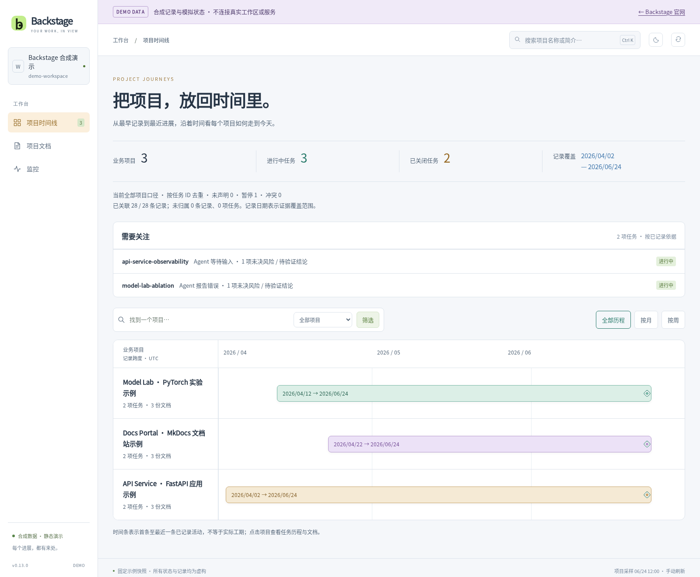

记住结论，也记住来路。
以结构化事件记录事实、决策和验证依据。稳定的任务 ID 串联跨仓库工作，重要信息可以回到来源核对。
可追溯的共享记忆↗
OPEN-SOURCE AGENT WORKSPACE
把多 Agent、多仓库的记忆、项目历程和运行证据，放进同一个工作区。下一次开始，从已经确认的事实出发。
无需安装即可体验 Demo 仅使用合成数据
Codex / Claude Code / Kimi
决策 · 验证 · 来源 · 关联会话
PROJECT JOURNEYS
先看项目，再看任务。沿着时间线展开关键决策与验证，需要时再追溯原始依据。
亲手探索合成工作区
时间条表示已有记录的首尾跨度，不代表计划排期或连续工作时长。任务状态与运行状态分别展示。
A SMALL, CONNECTED TOOLKIT
沿用现有 Agent 和仓库。按需要启用能力，让上下文、证据与交互各归其位。
以结构化事件记录事实、决策和验证依据。稳定的任务 ID 串联跨仓库工作，重要信息可以回到来源核对。
时间线组织项目、任务与关键节点。把项目知识、成果和关联会话放回上下文，不用先翻一长串原始记忆。
查看已配置的集群资源快照、业务监控和本机服务。清楚标记采样时间、不可用与未配置；网页保持只读。
独立配置飞书遥控和待决策提醒。任务交互与运行通知各有记录；收到通知，不会被当作已经获得批准。
通用源码、配置模板与合成示例。没有业务项目、私有配置或凭据。
scripts/ · tools/ · examples/记忆、项目知识和共享 Skill 由你管理；多机共享需自行配置私有存储。
.share/服务配置、交互状态与日志留在本机。SSH 凭据继续由本机 SSH 管理。
.local/ · config.jsonSTART SMALL
完整工具环境支持 Linux x86-64。准备 Git 与 Pixi，在全新工作区完成一次初始化，再打开只读工作台。
查看完整初始化说明已有工作区请沿用原配置。初始化前先预检入口冲突；S3、监控与飞书均按需独立配置。
git clone https://github.com/ZenosZeng/Backstage.git ~/code/.agents
cd ~/code/.agents
pixi install --locked
# 先预检，确认无冲突后再初始化
python3 scripts/sync.py --dry-run init --local --machine-id my-dev-machine
python3 scripts/sync.py init --local --machine-id my-dev-machine
pixi run webBUILT TO BE UNDERSTOOD
不需要账号，也不需要把工作区交给网站。